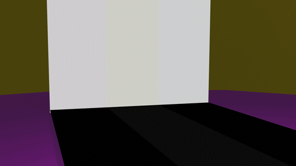
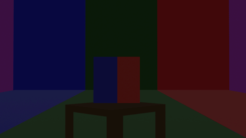
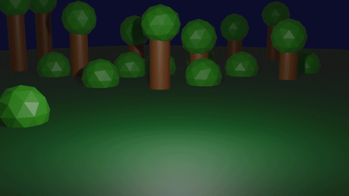

Projects
Pac-Man Video
One project I would like to show is one that I did in my Intro to New Media class in which we were allowed to create anything as long as we made use of 3 applications we went over in class. I ended up using Adobe Illustrator, Premiere and Photoshop in order to make my own version of Pac-Man.
Web Development Site
This next project was a site I built going over multiple aspects of being a web developer.
I did some research on all of the different aspects that go into building websites and put them together in HTML and CSS.

 Heres the CSS I used to stylize the whole site.
Heres the CSS I used to stylize the whole site.


Light Up Gif
In this gif I created a 3d model in Blender which I then animated together in order for a ball to roll across and make the floor look like it was lighting up.
Color Change Gif
In this gif I made a 3d model in Blender which I then animated to schange it's colors and spin while the backround also shifted colors.
Rube Goldberg Video
In this video I used Blender to 3d model a rube goldberg machine. I then animated it so the ball goes from the top of the machine to the bottom into the garbage can. I wanted it to have an elaborate pinball machine effect where the ball is constantly being moved through the use of elevators.
T.V. World Video
In this video I used Blender to create a 3d model and and was trying to create a world within a television. I wanted the viewer to be as confused as to what is going on around them as the character is in order to create a more mysterious tone. I animated all of the camera movement and used pre made animation cycles for the characters movement.
U.F.O Gif
In this gif I used Blender to 3d model a ufo and a landscape. I then animated a ball to roll out and be picked up by the ufo. I wanted to animate the ufo in a way that made it look like it was moving so I had it rotate while it was raing and lowering onto the field.
Dream Room
In these image's I used Blender to 3d model a series of rooms that go from normal to weird to even weirder. I wanted to play with the idea of waking up in a dream where yor somewhere familar but as it goes on it gets crazier and crazier.